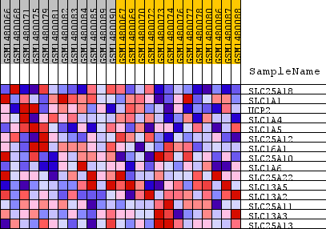
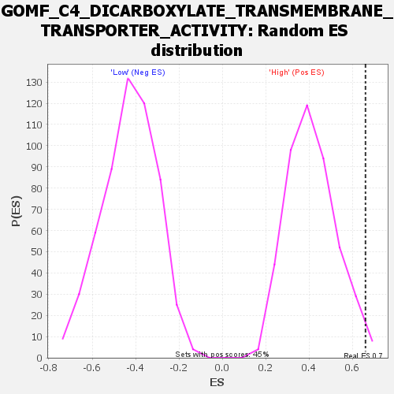

Profile of the Running ES Score & Positions of GeneSet Members on the Rank Ordered List
| Dataset | WG6v3.CPT1A.cls#High_versus_Low.CPT1A.cls#High_versus_Low_repos |
| Phenotype | CPT1A.cls#High_versus_Low_repos |
| Upregulated in class | High |
| GeneSet | GOMF_C4_DICARBOXYLATE_TRANSMEMBRANE_TRANSPORTER_ACTIVITY |
| Enrichment Score (ES) | 0.66006976 |
| Normalized Enrichment Score (NES) | 1.6059191 |
| Nominal p-value | 0.015625 |
| FDR q-value | 1.0 |
| FWER p-Value | 1.0 |
| SYMBOL | TITLE | RANK IN GENE LIST | RANK METRIC SCORE | RUNNING ES | CORE ENRICHMENT | |
|---|---|---|---|---|---|---|
| 1 | SLC25A18 | SLC25A18 | 21 | 0.246 | 0.2943 | Yes |
| 2 | SLC1A1 | SLC1A1 | 217 | 0.133 | 0.4440 | Yes |
| 3 | UCP2 | UCP2 | 244 | 0.127 | 0.5954 | Yes |
| 4 | SLC1A4 | SLC1A4 | 839 | 0.079 | 0.6593 | Yes |
| 5 | SLC1A5 | SLC1A5 | 1984 | 0.050 | 0.6601 | Yes |
| 6 | SLC25A12 | SLC25A12 | 4391 | 0.023 | 0.5643 | No |
| 7 | SLC16A1 | SLC16A1 | 5139 | 0.018 | 0.5480 | No |
| 8 | SLC25A10 | SLC25A10 | 5608 | 0.016 | 0.5428 | No |
| 9 | SLC1A6 | SLC1A6 | 8406 | 0.005 | 0.4044 | No |
| 10 | SLC25A22 | SLC25A22 | 10590 | -0.002 | 0.2941 | No |
| 11 | SLC13A5 | SLC13A5 | 13079 | -0.010 | 0.1784 | No |
| 12 | SLC13A2 | SLC13A2 | 14537 | -0.019 | 0.1260 | No |
| 13 | SLC25A11 | SLC25A11 | 14764 | -0.020 | 0.1387 | No |
| 14 | SLC13A3 | SLC13A3 | 15453 | -0.026 | 0.1349 | No |
| 15 | SLC25A13 | SLC25A13 | 17594 | -0.058 | 0.0942 | No |

